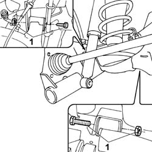
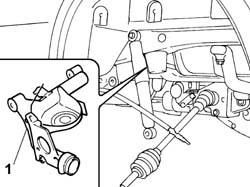

4420B10 L/H OR R/H REAR SUSPENSION WISHBONE (ONE) - R+R
- Path
- Procedures > 44 SUSPENSION AND WHEELS > 4420 REAR SUSPENSION > 4420B REAR SUSPENSION WISHBONES > 4420B10 L/H OR R/H REAR SUSPENSION WISHBONE (ONE) - R+R
- Kind
- repair procedure (removal / refitting; the operation number is the code)
- Applies to
- engines: 1.2 8v; all production periods
- Interactive page
- https://sloeber94.github.io/elrnDB-fPnd/en/#/169001819
Applies to: engines: 1.2 8v; all production periods; only with equipment: 4x4
 Removing
Removing
 Refitting
RefittingOp. 4450B08 RIGHT REAR WHEEL R R
[Left or right]
Op. 3310B50 REAR BRAKE DISCS R R
Op. 3310B57 REAR CALLIPER BRACKET - R R
Op. 4450D11 ONE REAR WHEEL HUB, LH OR RH - R+R WITH WHEELS REMOVED FOR VERSIONS WITH ABS
1. Unscrew the bolts securing the rear suspension wishbone.

Applies to: engines: 1.2 8v; all production periods; only with equipment: 4x4
1. Remove the front suspension wishbone.

Applies to: engines: 1.2 8v; all production periods; only with equipment: 4x4
Refitting
RemovingPosition the rear suspension wishbone and tighten the bolt to torque.
Value daNm | Fastening | Component | Ø | |
|---|---|---|---|---|
- | 10 | Bolt | Outer side | M12 X 1.25 |
Value daNm | Fastening | Component | Ø | |
|---|---|---|---|---|
- | 11 | Bolt | Inner side | M12 X 1.25 |
Op. 4450D11 ONE REAR WHEEL HUB, LH OR RH - R+R WITH WHEELS REMOVED FOR VERSIONS WITH ABS
Op. 3310B57 REAR CALLIPER BRACKET - R R
Op. 3310B50 REAR BRAKE DISCS R R
Op. 4450B08 RIGHT REAR WHEEL R R
[Left or right]
Topics linked from this page (4)
- 3310B50 REAR BRAKE DISCS R R
- 3310B57 REAR CALLIPER BRACKET - R R
- 4450B08 right rear wheel r r
- 4450D11 ONE REAR WHEEL HUB, LH OR RH - R+R WITH WHEELS REMOVED FOR VERSIONS WITH ABS